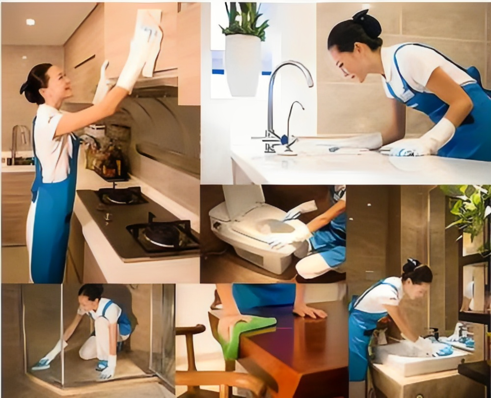

一、精保洁服务程序与标准 （一）所用工具： 大型吸尘吸水机、多功能擦地机、玻璃套装工具、加长杆、梯子、水桶、掸子、云石铲刀、刮子、涂水器等。 （二）所用药剂： 全能清洗剂、玻璃清洗剂、瓷砖清洗剂、陶瓷清洗剂、去胶剂、除渍剂、酸性清洁剂、洁厕剂不锈钢清洗剂、不锈钢光亮剂、家私 蜡等。 （三）精保洁程序： 精保洁是对开荒保洁的再一次巩固，再开荒保洁的基础上做好精保洁，能更好的体现房产的本身价值，让业主放心的拥有，安心的 享受开发商为他们提供的洁净、舒适的环境。开荒保洁是着重处理大面上由于装修遗留下的污渍、垃圾、灰尘等，精保洁是在开荒保洁 基础上，对房间进行的再一次保洁，所注重之处在细节上，随然做过了开荒保洁，但仍会一些浮尘落下，所以精保洁仍需全面清洁。具 体如下： 1、 玻璃：先用毛巾再一次擦拭玻璃框，着重处理没有做掉的部位，再用涂水器沾稀释后的玻璃水溶液，均匀的从上到下涂抹玻璃，后 用刮子从上到下刮干净，用干毛巾擦净框上留下的水痕，玻璃上的水痕用机皮擦拭干净。着重之处：框缝吸尘，擦拭。 2、 卫生间：用湿毛巾从上到下全方位的擦拭，着重处理开荒留下的死角，洁具及不锈钢管件等，后用干毛巾全方位的擦拭一遍，不锈 钢管件擦抹不锈钢养护液。 3、 厨房：用湿毛巾再一次全方位的擦拭一遍，着重地面的边角，厨具及各种不锈钢管件，后用干毛巾再重复一次，用不锈钢养护液擦 拭各种不锈钢管件。 4、 卧室及大厅：用掸子清除墙面留下的尘土，擦拭开关盒、排风口、空调口、排烟装置等。 5、 门及框：把毛巾叠成方块，从上到下擦拭，去掉胶点等污渍，擦拭门框，着重框上，门角等易被忽略的地方，全面擦拭后，喷上家 私蜡。 6、 地面的清洗：着重处理开荒遗留下的漆点、胶点等污渍，后用高温蒸汽清洗机对地面进行高温消毒，后推牵尘油（起防尘作用）。 7、 地角线：用湿毛巾全面擦拭，着重处理没有做掉的漆点，再用干毛巾擦拭后分材质而喷上家私蜡 二、精保洁与开荒保洁的不同： 由于精保洁是基于开荒保洁之上的又一次清洁工作，所以它与开荒保洁有着不同之处：开荒保洁是着重处理装修遗留下的垃圾、尘埃、胶迹、涂料点等，它注重的是整体效果；精保洁则不然，它注重的是细节问题，开荒保洁后，仍然会有一些胶迹涂料点等污迹， 一些容易被人忽略的边角、门框沿、窗框缝等。 三、标准： 玻璃：目视无水痕、无手印、洁净光亮；框缝无尘土、洁净；窗台下手摸光滑无尘土。 卫生间：无杂物、无污渍、洁具触摸光滑、有光泽、无异味。 厨房：无杂物、无污渍、瓷砖表面洁净，手摸光滑，有光泽。 卧室及大厅：墙壁手摸光滑、无尘土，开关盒、排风口、空调出风口等无尘土、无污渍，灯具洁净 门及框：手摸光滑、无污渍、沿口处无尘土，无死角，有光泽。 地面：无尘土、无污渍、地板光滑有光泽，石材光亮。 地角线：无尘土、洁净、无胶渍。
上海五美是专业的上海保洁公司，提供写字楼保洁、大型综合商场保洁、工厂保洁、学校保洁、小区保洁、别墅区保洁、办公室保洁、大型游乐园保洁、开荒保洁、大理石翻新和养护、地毯清洗、水箱清洗、地面清洁、外墙清洗、物业管理、日常保洁外包等。欢迎广大新老客户前来咨询！
- 